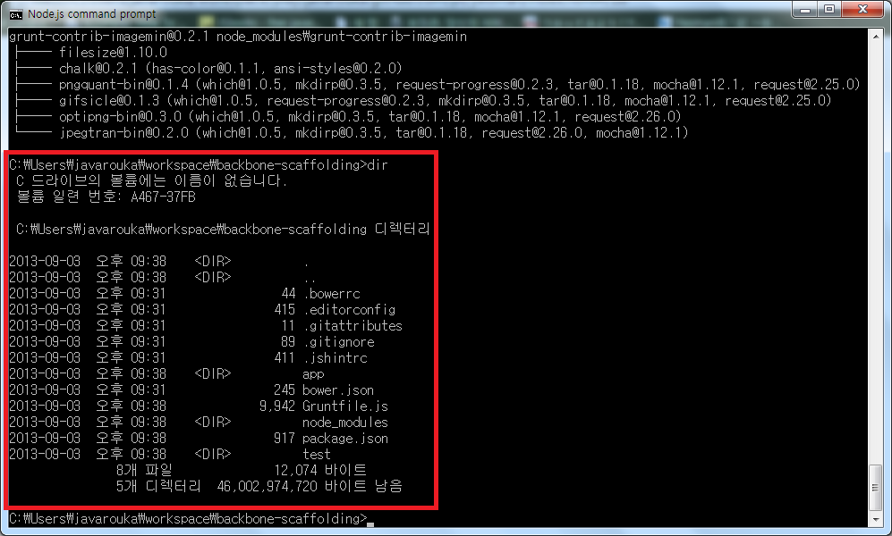
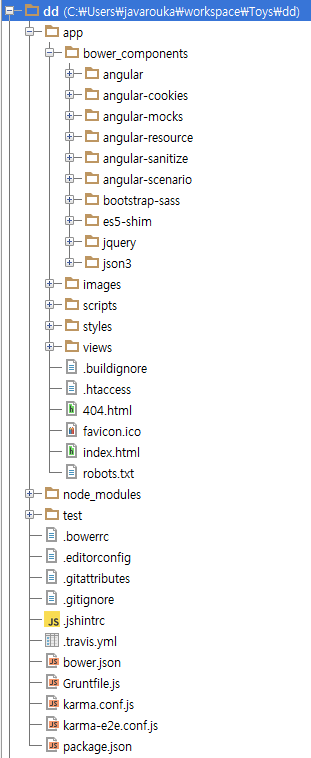
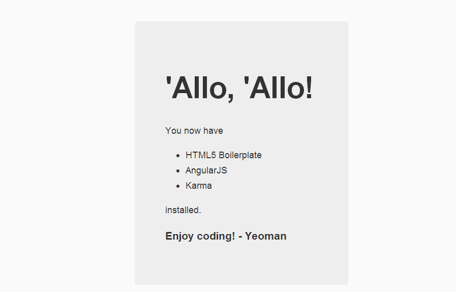

Yeoman
웹 개발을 편하게 - Yeoman
Created by 이항희 / atconsole.com (Team Blog)
{
"slide" : "발표자 소개",
"name" : "이항희",
"job" : "웹 프로그래머",
"group" : "JavaCafe, Undefined 운영진",
"blog" : [
"http://blog.javarouka.me",
"http://atconsole.com"
]
}목차
- Yeoman?
- Scaffolding
- Yeoman Generator
- Installation
- Grunt + Bower
- AngularJS Example
오늘 할 이야기
최근의 웹 어플리케이션을 만들려면 할게 너무나 많습니다.
너무나 많은 파일과 디렉토리 생성,
각종 라이브러리들 관리,
공통 소스파일 생성, 로컬 웹서버 세팅
만드는 도중의 지속적 테스트, 빌드, 배포...
ETC...
이것들을 조금이라도 해소시켜줄 Yeoman에 대해 살짝 기초만 알아보겠습니다
Yeoman?
발음이 이상하죠.
사전의 뜻은 보좌관, 영국 황실 근위병
이런 분들...
이분들이 위험한 프로그래밍을...?
그건 아니고, 웹 개발을 보조해주는 툴입니다.
개발 보좌관이지요.
공식 사이트는 여기
http://yeoman.io/
Yeoman은 Scaffolding 툴입니다.
웹 어플리케이션을 제작하기 전에 필요한 디렉토리 구조 및 기본적인 파일을 생성해 줍니다.
Scaffolding의 정의
조력. 초기 단계에 적절한 도움을 통한 작업시간의 단축.
작업자에 대하여 적절한 도움을 제공함으로써 유의미한 작업을 수행할 수 있게 도움을 주는 것.
특히 초보자의 경우 더욱 작업에 익숙해지는 결과를 얻기도 함.
건축 공사에서는 비계 라고 부르기도 합니다
빌딩 건축시 높은 곳에서 일할 장소를 제공하거나, 재료 및 작업의 동선을 제공하지요
Yeoman도 개발 시
코드를 자동 생성해주거나 라이브러리와 각종 테스트, 배포, 컴파일 과정을 간단하게 실행시켜 줍니다
구조자체가 다릅니다.
가정집을 만들때의 스캐폴딩과 고층 아파트의 스캐폴딩은 다를 수 밖에 없습니다.
bootstrap을 사용한 앱을 만드는 것과 Chrome Extension 을 만드는건 디렉토리 구조부터 컴포넌트까지 아예 다릅니다.
그래서 Generator
Scaffolding을 만들어 주는 생성기입니다.
bootstrap 앱을 만든다면 bootstrap Generator...AngularJS를 사용한 앱을 만든다면 angular Generator를 사용하여 스캐폴딩을 만듭니다.
제너레이터 사용 예
// 백본 제너레이터 설치
$ npm install -g generator-backbone
// 백본 스캐폴딩 생성
$ yo backbone이런 스캐폴딩 구조가 자동 생성됩니다.
Java를 하신 분이라면, Maven의 Archetype 과 좀 비슷하다고 느끼실 겁니다.
yeoman의 공식 Generator 는 다음과 같습니다.
기타 커뮤니티 Generator List
아직 얼마 안되어서인지 등록된 제너레이터가 많진 않습니다.
http://yeoman.io/community-generators.html
원한다면 직접 만들어서 사용하거나 여기에 등록할 수도 있습니다.
Installation
설치는 아주 간단합니다.
npm을 사용해서 window, linux 동일하게 설치할 수 있습니다.
Node.JS와 Ruby 에 의존성이 있기에 둘다 설치해야 합니다.
- Node.JS가 없다면 설치합니다.
- Ruby가 없다면 설치합니다.
-
다음 명령어를 커맨드라인에 타이핑합니다.
// compass를 설치합니다. sass 컴파일 시 필요합니다. $ gem install compass // Yeoman을 설치합니다. $ npm install -g yo
이걸로 설치가 끝났습니다. 간단합니다 ㅋ
Grunt와 Bower
뜬금없지만, Yeoman을 하려면 이 둘도 반드시 알아야 합니다!
일단...Yeoman의 작동 흐름을 살펴보면
Yeoman의 Scaffolding 생성
앞서 설명드렸다시피 Yeoman 을 사용하면 웹 개발시 반드시 작성해야 하는 파일과,
프레임워크 기반, 즉 AngularJS, Backbone, Bootstrap...기타등등을 사용하는 기본 구조의 웹 스캐폴딩을 작성해줍니다.
이러한 구조를 직접 yeoman 없이 만들려면 프로그래머는
- app, test, js, css, asset, view 등등의 디렉토리를 만들고
- 사용하려는 컴포넌트를 배포 사이트에 가서 다운로드 받고
- index.html을 생성하고
- 다운로드 받은 컴포넌트 파일들을 페이지에 일일히 include 시켜줍니다.
- 또한 프리뷰 빌트인 서버가 필요하므로 서버도 셋업합니다.
- 프로토타입 코드 작성 및 반복코드 작성은 피하고 싶고,
- 코딩한 파일에 대한 검증과 테스트는 필수입니다.
- 이미지 최적화, 스크립트, CSS minified 작업 및 파일 합치기...etc
귀찮다...
내가 yeoman을 쓴건 반복 작업을 할 용기가 없어서였어...Yeoman을 쓰면
방금 나열한 작업들을 전부 커맨드라인 몇줄로 해결할 수 있습니다.
디렉토리 구조 작성 및 의존 컴포넌트 다운로드 및 삽입
$ yo {제너레이터 이름}개발 서버 준비
$ grunt server간단한 localhost 서버입니다.
별도 서버를 설치하지 않아도 로컬에서 접속해볼 수 있습니다
컴파일 및 배포
$ grunt간단하다!
사실 개발이 이렇게 간단하지만은 않지만 귀찮은 작업이 확 줄어드는건 사실입니다소개드린 작업의 워크플로우는 다음과 같습니다.

그럼 Bower와 Grunt에 대해 간단하게 살펴보겠습니다.
Bower
의존성 컴포넌트 관리자
프로젝트의 여러 의존 컴포넌트를 간단한 설정파일로 관리할 수 있습니다.
Java를 하신 분이라면 Maven 빌드 툴의 의존성 관리와 비슷하다고 보시면 됩니다.
만일 프로젝트에 jquery와 underscore, bootstrap을 사용해야 한다고 가정하면
$ bower install underscore bootstrap잠시 후 bower_components 라는 디렉토리 아래에 다운로드가 됩니다.
bower.json
이 파일을 프로젝트 루트에 생성하고 의존성 정보를 정의해두면 의존성을 일일히 쳐넣을 필요가 없습니다.
{
"name": "very-good-excellent-webapp",
"version": "1.0.0",
"main": "very/good/excellent.js",
"ignore": [
"**/.*",
"hatefile"
],
"dependencies": {
"underscore": "~1.5.1",
"bootstrap": "~3.0.0"
}
}$ bower installYeoman은 제네레이터에 따라
bower.json을 자동 생성하고, bower로 의존 컴포넌트를 자동으로 받아 스캐폴딩을 생성하죠.
스캐폴딩 생성 설정 외에 추가로 받을게 있다면 bower.json에 추가하고 다시 install 해주면 됩니다.
Grunt
태스크 실행 툴. 테스트, 빌드 배포, 기타등등 여러 정의한 태스크를 수행.
제일 혹사당하는 녀석 같습니다. 그만큼 기능이 막강하다는 뜻도 되겠네요.
Grunt는 아주 유능합니다.
Node.JS 를 사용하여 태스크 스크립트를 만들수 있어서 Node.JS에서 할 수 있는 모든 것을 프로젝트에 적용할 수 있습니다.
Gruntfile.js
Grunt는 스크립트 파일인 Gruntfile.js을 참고로 수행됩니다
Grunt는 Maven처럼 플러그인 기반이라서
작업을 수행하려면 플러그인을 설치하고 스크립트에 수행 계획과 함께 등록해야 합니다.
Gruntfile.js Example
module.exports = function(grunt) {
grunt.initConfig({
pkg: grunt.file.readJSON("package.json"),
// 소스를 못생기게 만드는(...) Task 등록
uglify: {
build: {
src: "src/ultra.js",
dest: "build/ultra.min.js'
}
}
});
};
grunt.loadNpmTasks('grunt-contrib-uglify'); // uglify Task 로딩
grunt.registerTask('default', ['uglify']); // 기본 Task로 등록$ grunt uglify // 코드가 못생겨 집니다.할일이 많다.
module.exports = function(grunt) {
grunt.initConfig({
pkg: grunt.file.readJSON("package.json"),
uglify: { ... }, // 소스 minify Task
changelog: { ... }, // 체인지로깅 Task
jshint: { ... }, // 소스 문법 검사 Task
connect: { ... }, // 로컬서버 Task
mocha: { ... }, // 테스트 Task
watch: { ... }, // 실시간 소스 감시 Task
shell: { ... }, // 쉘 명령 Task
xxxTask // 기타
yyyTask // 등등
coolTask // 사용자 정의 Task
...
build: { ... } // 배포 Task
});
};프로젝트 구조마다 달라지기도 합니다.
아니 그전에 Task 각각의 설정법을 파악하는 것도 큰일이네요.
Yeoman으로 Scaffolding을 생성하면
해당 Scaffolding에 맞는 기본 Gruntfile.js 을 생성해줍니다.
별도로 새 Task나, 변경이 필요한 Task가 있다면 Yeoman이 생성해준 Gruntfile.js에 약간의 추가나 수정만 하면 되겠죠.
AngularJS Generator Example
AngularJS Generator 를 사용하는 예제를 살펴보겠습니다
Scaffolding 만들기
$ npm install -g generator-angular // angular generator 설치
$ yo angular // scaffolding 생성
$ grunt // 빌드
$ grunt server // 로컬서버 구동scaffolding 결과 디렉토리
자동 생성된 프론트페이지
페이지 추가해보기
$ yo angular:route auto-create // auto-create 라우팅 생성AngularJS Generator 종류
$ yo angular // 기본 스캐폴딩 생성
$ yo angular:controller user // user 컨트롤러 생성
$ yo angular:directive myDirective // myDirective Directive 생성
$ yo angular:filter myFilter // myFilter filter 생성
$ yo angular:route user // user 컨트롤러, 뷰, 그리고 라우팅 설정 한번에 생성
$ yo angular:service myService // myService 서비스 생성
$ yo angular:decorator myDecorator // myDecorator 생성
$ yo angular:view user // user view 생성
watch 플러그인
grunt server 로 서버를 수행하면 기본적으로 watch 플러그인 덕분에 실시간으로 소스가 갱신됩니다.
정리
- Yeoman을 사용하면 웹 프로젝트 개발 효율을 증가시킬 수 있고, 생성된 코드를 보며 학습 비용도 덜 수 있다
- 기본적인 스캐폴딩이 마음에 들지 않으면 직접 정의해서 사용할 수도 있으며 효율적인 외부 컴포넌트 관리 및 배포 테스트가 쉽다.
- 제네레이터 공유만으로 쉽게 프로젝트 환경을 공유할 수 있다.
그러나
- 스캐폴딩 제네레이터 정의는 귀찮고, 이미 정의된 것은 마음에 들지 않을 수 있다.
- 간단하게 bower.json 과 Gruntfile.js, package.json 만 공유해도 비슷한 효과가 나기에 굳이 Yeoman을 끼워넣어 거추장스럽게 할 필요가 없을 수도 있다.
감사합니다
Happy Coding!